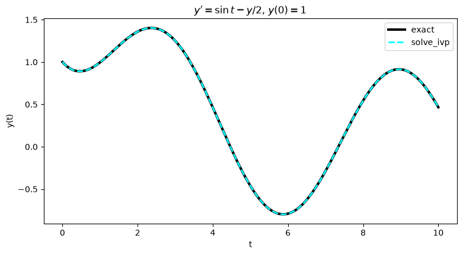
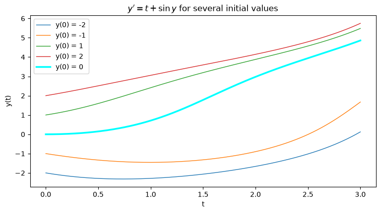
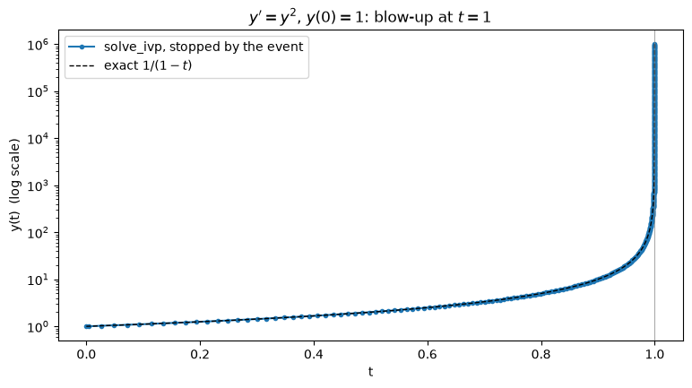

Solving initial value problems numerically with SciPy#
A first-order initial value problem (IVP) is $\( y'(t) = f\big(t, y(t)\big), \qquad y(t_0) = y_0. \)$
Most differential equations have no formula for the solution, for example \(y' = t + \sin y\). But we can always compute the solution numerically: instead of a formula, we get a table of numbers $\( t_0,\ t_1,\ t_2,\ \dots \qquad y_0,\ y_1,\ y_2,\ \dots \qquad \text{with } y_k \approx y(t_k). \)$
The tool is solve_ivp from scipy.integrate.
import numpy as np
import matplotlib.pyplot as plt
from scipy.integrate import solve_ivp
Part A. The basic call#
We start with an equation whose exact solution we know, so we can check the numbers: $\( y' + \tfrac12 y = \sin t, \qquad y(0) = 1, \qquad \text{exact: } y(t) = \tfrac25\sin t - \tfrac45\cos t + \tfrac95 e^{-t/2}. \)$
Step 1: write the equation as \(y' = f(t, y)\)#
Solve for \(y'\): \(\quad y' = \sin t - \tfrac12 y\).
In Python, \(f\) is a function of t and y (in this order!) that returns \(y'\).
def f(t, y):
return np.sin(t) - y/2
def y_exact(t): # only used to check the numerical answer
return 2/5*np.sin(t) - 4/5*np.cos(t) + 9/5*np.exp(-t/2)
Step 2: call solve_ivp#
sol = solve_ivp(f, (t0, T), [y0])
f: the right side \(f(t, y)\).(t0, T): the time interval \([t_0, T]\).[y0]: the initial value, in a list.
sol = solve_ivp(f, (0, 10), [1])
print("success:", sol.success)
print("sol.t =", np.round(sol.t, 2))
print("sol.y =", np.round(sol.y, 3))
success: True
sol.t = [ 0. 0.1 1.05 2.48 4.06 5.54 7.03 8.64 10. ]
sol.y = [[ 1. 0.958 1.015 1.398 0.408 -0.748 -0.261 0.873 0.466]]
The result sol contains:
sol.success:Trueif the solver reached \(t = T\).sol.t: the times \(t_k\). The solver chooses the steps itself: they are not equally spaced.sol.y: the values \(y_k\). It is a 2D array with one row, so the numbers are insol.y[0].
Step 3: plot the solution#
Only 9 points: too few for a smooth curve. With t_eval=tt the solver reports the solution at the times we choose.
tt = np.linspace(0, 10, 400)
sol = solve_ivp(f, (0, 10), [1], t_eval=tt)
fig, ax = plt.subplots(figsize=(9, 4.5))
ax.plot(tt, y_exact(tt), "k", lw=3, label="exact")
ax.plot(sol.t, sol.y[0], "--", color="cyan", lw=2, label="solve_ivp")
ax.set_xlabel("t"); ax.set_ylabel("y(t)")
ax.set_title(r"$y' = \sin t - y/2$, $y(0) = 1$")
ax.legend()
plt.show()

Step 4: how large is the error?#
err = np.max(np.abs(sol.y[0] - y_exact(tt)))
print("max error:", err)
max error: 0.0007428953537662597
The curves look identical, but the error is about \(10^{-3}\): only 2–3 correct digits. The default settings are rough.
Part B. Accuracy: rtol and atol#
What the solver does in each step#
In every step the solver makes an estimate of its own error. It accepts the step only if $\( |\text{error}| \;\le\; \texttt{atol} + \texttt{rtol}\cdot|y|. \)$ Otherwise it repeats the step with a smaller step size.
rtol= relative tolerance: the error allowed as a fraction of \(y\).rtol=1e-6means roughly 6 correct significant digits. Default:1e-3.atol= absolute tolerance: the error allowed in absolute terms. It matters when \(y\) is close to 0, where \(\texttt{rtol}\cdot|y|\) is almost 0. Default:1e-6.
The bigger of the two terms wins: when \(|y|\) is large, rtol controls the accuracy; when \(|y|\) is small, atol does.
Rule of thumb: choose rtol for the digits you want, and atol smaller than the size of \(y\) that you still care about.
Smaller tolerances, smaller errors#
print(" rtol max error calls of f")
for rtol in [1e-3, 1e-6, 1e-9]:
sol = solve_ivp(f, (0, 10), [1], t_eval=tt, rtol=rtol, atol=1e-12)
err = np.max(np.abs(sol.y[0] - y_exact(tt)))
print(f"{rtol:8.0e} {err:9.1e} {sol.nfev:5d}")
rtol max error calls of f
1e-03 7.4e-04 56
1e-06 2.7e-06 176
1e-09 1.6e-08 560
The error follows
rtol: each time we ask for 3 more digits, we get 2 to 3 more.sol.nfevcounts how many times the solver calledf. More accuracy costs more work, but not much.
(The real error can be a bit larger than rtol: the tolerance controls each step, and errors from many steps add up.)
Part C. An equation with no formula#
There is no formula for this solution, but for solve_ivp it is just another f.
Step 1: solve and plot#
We also solve for several other initial values \(y(0) = y_0\): same equation, different starting points.
def g(t, y):
return t + np.sin(y)
tt = np.linspace(0, 3, 300)
fig, ax = plt.subplots(figsize=(9, 4.5))
for y0 in [-2, -1, 1, 2]:
sol = solve_ivp(g, (0, 3), [y0], t_eval=tt, rtol=1e-8, atol=1e-10)
ax.plot(sol.t, sol.y[0], lw=1, label=f"y(0) = {y0}")
sol = solve_ivp(g, (0, 3), [0], t_eval=tt, rtol=1e-8, atol=1e-10)
ax.plot(sol.t, sol.y[0], color="cyan", lw=2.5, label="y(0) = 0")
ax.set_xlabel("t"); ax.set_ylabel("y(t)")
ax.set_title(r"$y' = t + \sin y$ for several initial values")
ax.legend()
plt.show()

Step 2: check the answer without an exact solution#
Always check. Without a formula we cannot compute the error directly. Instead: solve again with tighter tolerances. The digits that do not change are reliable.
sol.y[0, -1] is the last value, i.e. \(y(3)\).
for rtol in [1e-4, 1e-7, 1e-10]:
sol = solve_ivp(g, (0, 3), [0], rtol=rtol, atol=1e-12)
print(f"rtol = {rtol:.0e}: y(3) = {sol.y[0, -1]:.10f}")
rtol = 1e-04: y(3) = 4.8594731540
rtol = 1e-07: y(3) = 4.8594856198
rtol = 1e-10: y(3) = 4.8594856793
Going from rtol=1e-7 to rtol=1e-10 does not change the first 7 digits: \(y(3) \approx 4.859486\).
Part D. When the solution blows up: stop with an event#
Some solutions go to infinity in finite time. Example: $\( y' = y^2, \qquad y(0) = 1, \qquad \text{exact: } y(t) = \frac{1}{1 - t}. \)\( As \)t \to 1\(, \)y(t) \to \infty\(: the solution does not exist beyond \)t = 1$.
Step 1: what solve_ivp does#
def h(t, y):
return y**2
sol = solve_ivp(h, (0, 2), [1])
print("success:", sol.success)
print("message:", sol.message)
print("last t :", sol.t[-1])
print("last y :", sol.y[0, -1])
success: False
message: Required step size is less than spacing between numbers.
last t : 0.9999286400563746
last y : 480848617754195.6
The solver takes smaller and smaller steps near \(t = 1\), until the step is too small for the computer’s numbers. Then it gives up (success: False), with a huge last value \(y \approx 5\cdot 10^{14}\).
Step 2: stop on purpose with an event#
An event is a function event(t, y). The solver watches it during the computation, and the event occurs when this function crosses zero.
To stop when \(y\) reaches \(10^6\):
the event function is \(y - 10^6\) (it is zero exactly when \(y = 10^6\));
too_big.terminal = Truemeans: stop the solver when the event occurs;pass it with
events=too_big.
Inside the event function, y is an array: the value is y[0].
def too_big(t, y):
return y[0] - 1e6
too_big.terminal = True
sol = solve_ivp(h, (0, 2), [1], events=too_big, rtol=1e-10, atol=1e-12)
print("status :", sol.status, " (1 = stopped by an event)")
print("message:", sol.message)
print("event at t =", sol.t_events[0])
print("y there =", sol.y_events[0])
status : 1 (1 = stopped by an event)
message: A termination event occurred.
event at t = [0.999999]
y there = [[999999.99996715]]
sol.status == 1: the solver stopped because of the event, not because it failed.sol.t_events[0]: the times when the event occurred;sol.y_events[0]: the values of \(y\) there.The event time \(t = 0.999999\) is where \(1/(1-t) = 10^6\): the event also tells us where the blow-up happens.
Step 3: plot up to the event#
fig, ax = plt.subplots(figsize=(9, 4.5))
ax.semilogy(sol.t, sol.y[0], "o-", ms=3, label="solve_ivp, stopped by the event")
ax.semilogy(sol.t, 1/(1 - sol.t), "k--", lw=1, label=r"exact $1/(1-t)$")
ax.axvline(1, color="gray", lw=0.5)
ax.set_xlabel("t"); ax.set_ylabel("y(t) (log scale)")
ax.set_title(r"$y' = y^2$, $y(0) = 1$: blow-up at $t = 1$")
ax.legend()
plt.show()

The points crowd together near \(t = 1\): the solver takes smaller and smaller steps as \(y\) grows.
Summary#
task |
call |
|---|---|
right side \(y' = f(t, y)\) |
|
solve |
|
output at chosen times |
|
accuracy |
|
results |
|
did it work? |
|
stop when \(y = c\) |
|
event results |
|
rtolcontrols the number of correct digits;atolcontrols the error when \(y\) is near 0. The defaults (1e-3,1e-6) are rough.Check with an exact solution if there is one; otherwise tighten the tolerances and see which digits stay.
If the solution blows up, the solver fails near the blow-up time; a terminal event stops it cleanly at a chosen large value.
Exercises#
Syntax
task |
call |
|---|---|
right side |
|
solve |
|
results |
|
all but the last point |
|
event |
|
error |
|
plot |
|
Exercise 1. The logistic equation $\( y' = y\,(1 - y), \qquad y(0) = \tfrac{1}{10}, \qquad \text{exact: } y(t) = \frac{1}{1 + 9e^{-t}}. \)$
(a) Solve on \([0, 10]\) with solve_ivp (default tolerances). Plot the numerical and the exact solution, and compute the maximum error.
(b) Repeat with rtol = 1e-6 and rtol = 1e-9 (and atol=1e-12). How does the error change? How does sol.nfev change?
(c) Plot the solutions for \(y(0) = 0.1,\ 0.5,\ 1.5\) on \([0, 10]\). What do they all approach?
# Exercise 1
Exercise 2. An equation with no formula: $\( y' = \cos(t\,y), \qquad y(0) = 1. \)$
(a) Solve on \([0, 10]\) and plot \(y(t)\).
(b) Find \(y(10)\) with rtol = 1e-4, 1e-7, 1e-10 (and atol=1e-12). How many digits of \(y(10)\) can you trust?
# Exercise 2
Exercise 3. Another solution that blows up: $\( y' = 1 + y^2, \qquad y(0) = 0, \qquad \text{exact: } y(t) = \tan t. \)$
(a) Try to solve on \([0, 3]\). Print sol.success, sol.message, and the last time sol.t[-1] the solver reached.
(b) Plot the numerical solution without the last point (sol.t[:-1], sol.y[0, :-1]), together with the exact solution at the same times. Then plot again with ax.semilogy instead of ax.plot. How large does \(y\) get?
(c) Explain with the exact solution why the solver cannot get past this time.
(d) Use a terminal event to stop the solver when \(y = 10^6\) (with rtol=1e-10, atol=1e-12). At which time does it stop? Compare with \(\pi/2\).
# Exercise 3